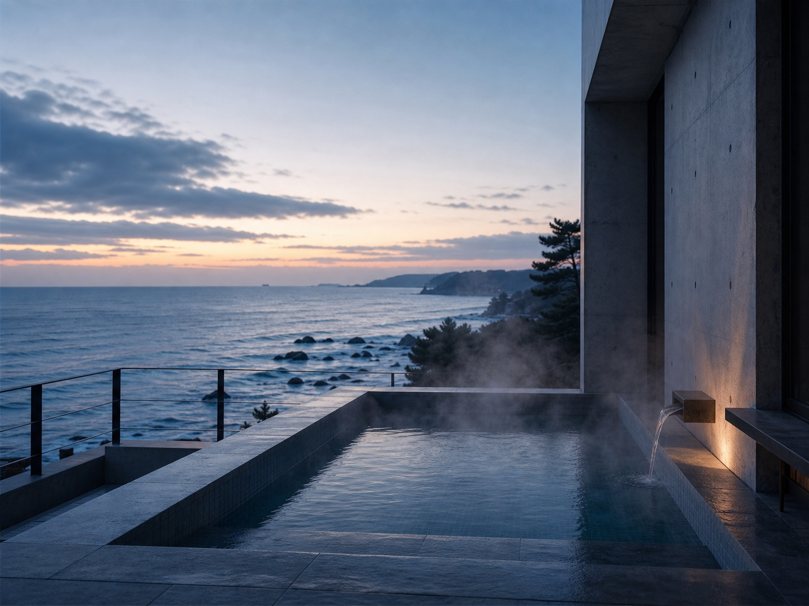
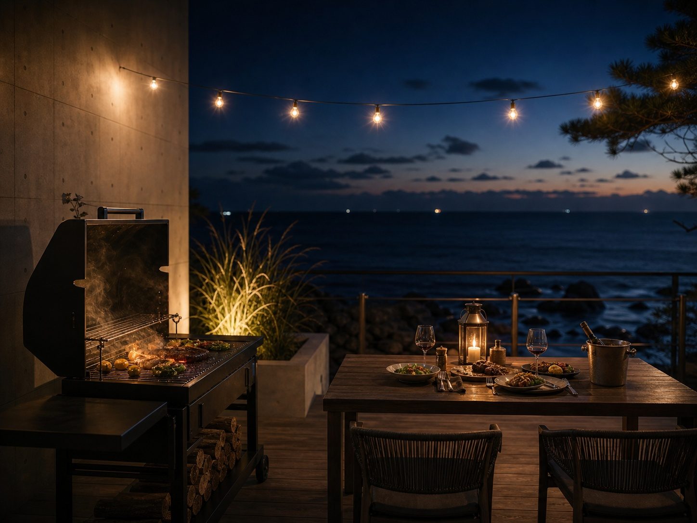
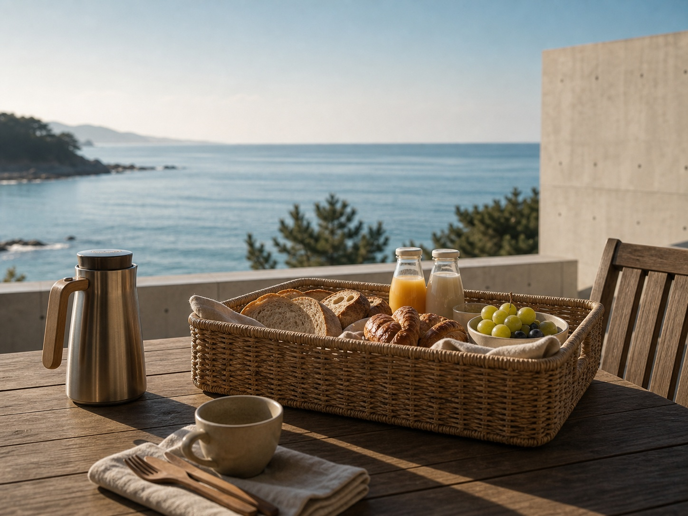

STAY & PLAY
머무는 동안
서두를 일 없는 하루. 스테이 안에서도, 잠시 나서도 좋은 것들을 준비했습니다.

야외 미온수 수영장
바다를 바라보며 몸을 담글 수 있는 작은 미온수 풀입니다. 세 팀만 머무는 만큼 붐비지 않게, 여유롭게 이용하실 수 있습니다.

프라이빗 바비큐
옆 팀 눈치 볼 필요 없이 우리 동만의 데크에서 저녁을 굽습니다. 숯과 그릴, 집게까지 준비해 드리니 먹거리만 챙겨 오세요.

조식 바구니
근처 빵집의 갓 구운 빵과 제철 과일, 드립백 커피를 담아 아침에 문 앞에 놓아 드립니다. 침대에서 눈뜨자마자 맞는 느긋한 아침.
노을 산책로
해가 질 무렵이면 뒷문으로 나가 해안 산책로를 걸어 보세요. 3분이면 닿는 바닷가에서 하루를 조용히 마무리할 수 있습니다.
AROUND
잠시 나선다면
죽도해변 서핑
초보 강습부터 보드 대여까지
양양 전통시장
제철 해산물과 주전부리
양양 카페거리
바다 뷰 카페가 모인 골목
하조대 일출
정자와 등대가 있는 일출 명소